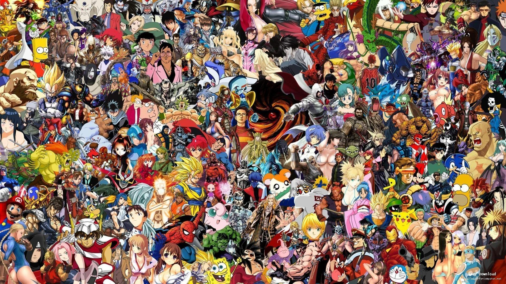
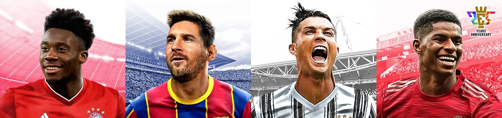
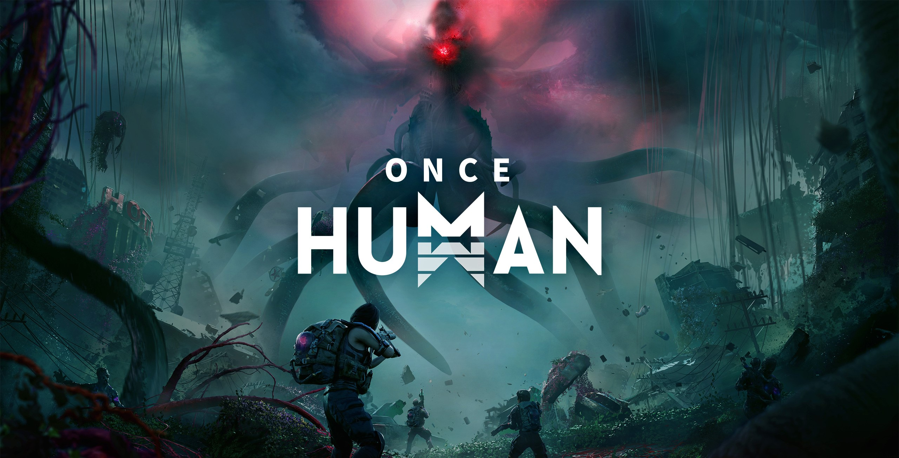

Daftar

Jika kamu sedang mencari hiburan yang menyenangkan dan memacu adrenalin, bermain game bisa menjadi pilihan terbaik. Dengan berbagai macam genre yang tersedia, mulai dari aksi, petualangan, hingga simulasi, dunia game menawarkan pengalaman yang kaya dan memikat bagi setiap pemain.
Baik kamu seorang gamer kasual yang mencari waktu santai atau hardcore gamer yang menginginkan tantangan, ada banyak judul game yang bisa memberikan pengalaman mendalam dan tak terlupakan. Dalam artikel ini, saya akan memberikan rekomendasi beberapa game terbaik yang patut dicoba, dari game dengan cerita epik hingga yang menawarkan gameplay kompetitif. Berikut adalah daftar game terbaik menurut saya :
- Pro Evolution Soccer 2021
- Mobile Legends: Bang Bang
- Once Human
Pro Evolution 2021

Pro Evolution Soccer (PES) 2021 kemungkinan adalah seri terakhir PES untuk PlayStation 4 atau PS4. Ya, kedatangan PS5 sudah pasti akan membuat Konami fokus membuat seri PES buat konsol game generasi baru itu. Untunglah, PES 2021 memberi kesan yang sangat manis bagi para fans-nya.
Jika dilihat sekilas, PES 2021 tidak ada bedanya dengan PES 2020. Baik menunya maupun visual dalam game bisa dikatakan identik. Konami agaknya hanya memperbarui transfer pemain maupun desain kostum klubnya sesuai dengan nama yang disematkan, yaitu Season Update.
Mobile Legends: Bang Bang

Mobile Legends: Bang Bang adalah permainan video seluler bergenre multiplayer online battle arena (MOBA) yang dikembangkan dan diterbitkan oleh Moonton, anak perusahaan dari ByteDance.
Dirilis pada tahun 2016, gim ini makin populer di seluruh dunia, terutama di wilayah Asia Tenggara, dan sejak itu telah melampaui 1 miliar kali unduhan, dengan puncak pemain bulanan sebanyak 100 juta. Pada tahun 2021, "Mobile Legends: Bang Bang" mencapai pendapatan kotor sepanjang masa sebesar US$1 miliar dengan 44 persen pendapatannya berasal dari luar Asia, menjadikannya gim seluler teratas dari genrenya dengan daya tarik paling global.
Once Human

Once Human adalah perpaduan antara mekanisme survival dan looter shooter, semuanya terjadi di peta sandbox bersama di dunia terbuka. Pemain masuk ke lingkungan dan dibawa melalui tutorial dan serangkaian misi awal, yang dirancang untuk mengajari pemain bagaimana elemen bertahan hidup bekerja, membuka kunci sistem masing-masing, dan memajukan narasi permainan.
Elemen bertahan hidup dari permainan ini termasuk mengumpulkan sumber daya, membuat item, membangun pangkalan, makan, dan mengelola sistem pengukur kewarasan. Pemain harus makan dan minum untuk menjaga pengukur rasa lapar dan hidrasi mereka. Menjaga meteran ini di atas ambang batas tertentu memberi pemain berbagai buff kesehatan dan kerusakan, antara lain. Perilaku tertentu, seperti menghabiskan waktu lama di area supernatural, mengurangi pengukur kewarasan yang pada gilirannya mengurangi kumpulan kesehatan maksimum pemain. Pemain harus mengonsumsi sumber daya tertentu untuk memulihkan pengukur kewarasan mereka, atau pemain harus beristirahat di tempat tidur.